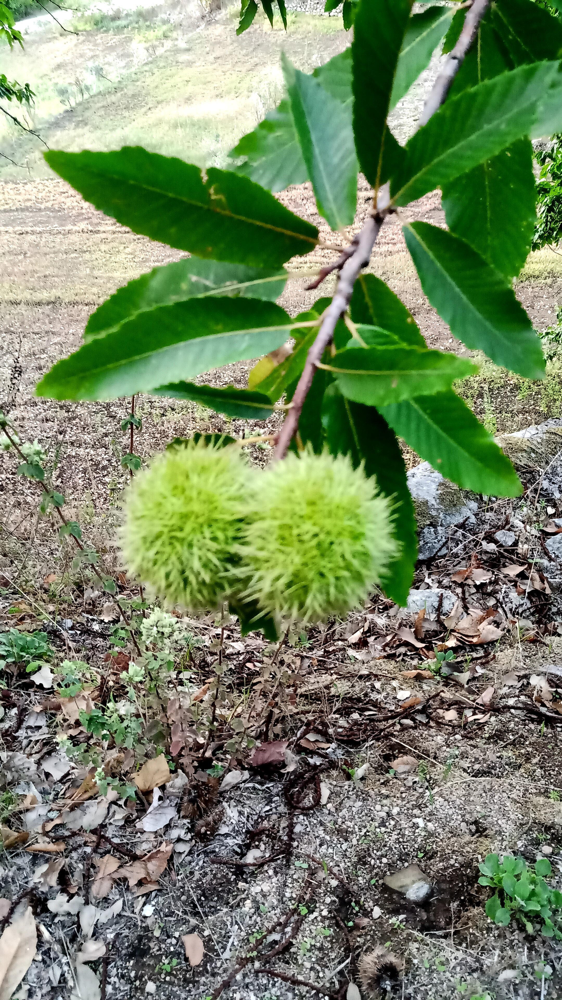
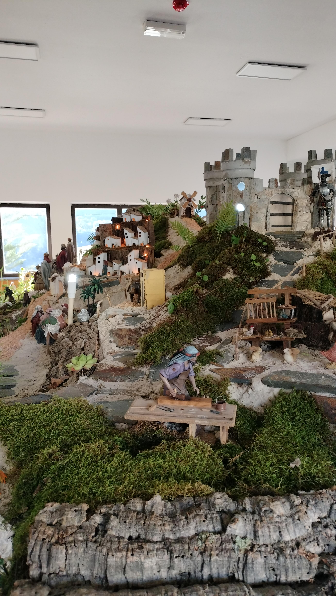
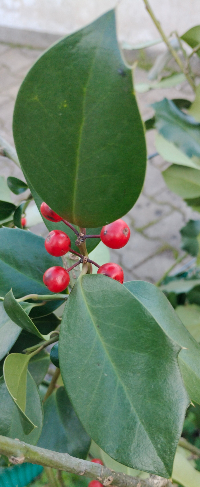
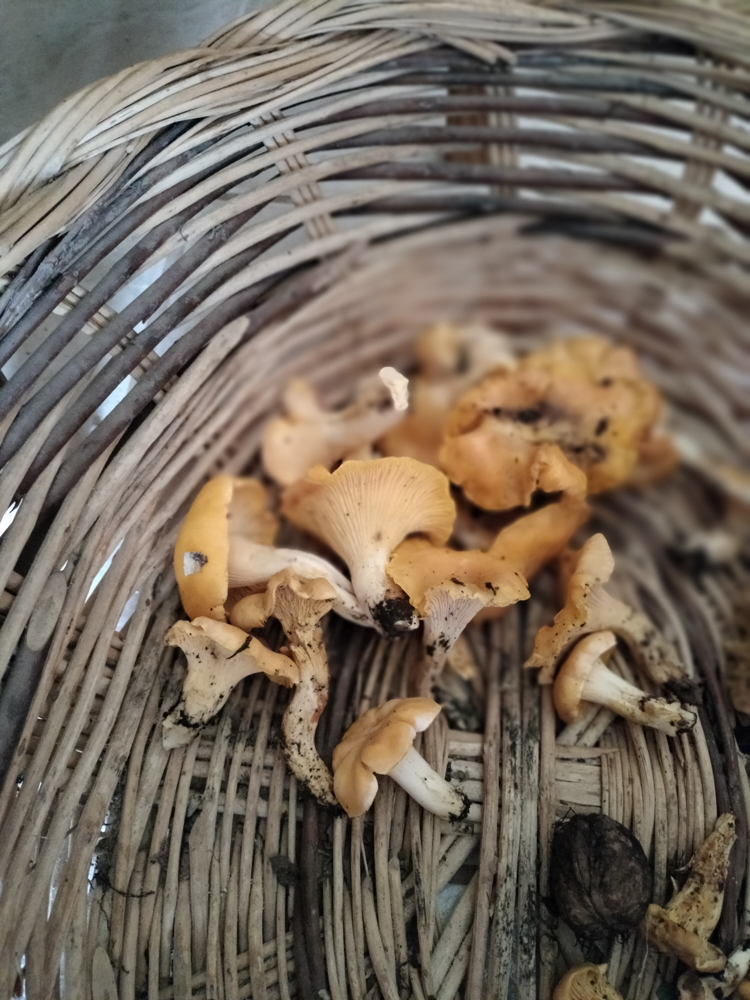

Camélia Japónica.Camélia Japónica mais bonita.Estrelícia.Flor da esteva bem aberta.Em Monchique as hortenses podem ser azuis ou cor de rosa..As rosas estão no jardim dos bombeiros e no municipal  Os castanheiros existem em vários locais de Monchique.No outono os ouriços têm castanhas.  No Natal o presépio da freguesia do Alferce é muito visitado.A vila de Monchique situa-se entre duas montanhas.Arco-íris formando um arco.Arco-íris ao alto.  O Azevinho é uma planta que existe em Monchique.Pelo 25 de Abril de 2025 fizeram cravos em renda.  Os cantarelos são cogumelos que aparecem no final do outono